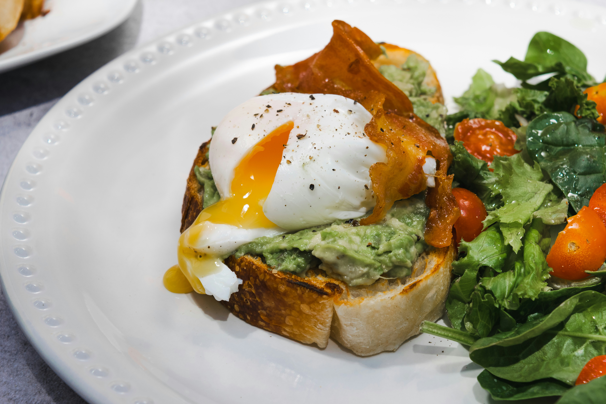

Tostadas de Aguacate y Huevo Pochado
El desayuno perfecto para comenzar el día con energía. Estas tostadas combinan la cremosidad del aguacate maduro con la riqueza del huevo pochado sobre pan crujiente. Un clásico saludable lleno de nutrientes esenciales y grasas buenas.
Preparación: 10 minutos
Cocción: 5 minutos
⏰ Total: 15 minutos
Ingredientes
- 4 rebanadas de pan integral o de masa madre
- 2 aguacates maduros
- 4 huevos frescos
- 1 limón
- 2 cucharadas de vinagre blanco (para pochar)
- Aceite de oliva virgen extra
- Sal marina en escamas
- Pimienta negra recién molida
- Copos de guindilla o pimentón (opcional)
- Semillas de sésamo o calabaza
- Lonchas bacon vegano
- Tomates cherry
- Rúcula o brotes verdes frescos
Instrucciones
- Poner a calentar agua en una cazuela amplia hasta que rompa a hervir. Añadir el vinagre blanco y bajar el fuego para que el agua quede a punto de ebullición, con pequeñas burbujas.
- Mientras el agua se calienta, tostar las rebanadas de pan en una tostadora o sartén hasta que estén crujientes y doradas por ambos lados.
- Partir los aguacates por la mitad, retirar el hueso y extraer la pulpa con una cuchara. Colocar en un bol.
- Aplastar el aguacate con un tenedor hasta obtener una textura cremosa pero con algunos trozos. Añadir el zumo de medio limón, una pizca de sal y pimienta. Mezclar bien.
- Lavar y cortar los tomates cherry por la mitad.
- Para pochar los huevos: romper cada huevo en un bol pequeño. Crear un remolino en el agua caliente con una cuchara y deslizar suavemente el huevo en el centro del remolino.
- Cocinar el huevo durante 3-4 minutos para que la clara cuaje pero la yema quede líquida. Retirar con una espumadera y colocar sobre papel absorbente.
- Repetir el proceso con cada huevo.
- Untar generosamente cada tostada con la mezcla de aguacate machacado.
- Depositar con cuidado un huevo pochado sobre cada tostada.
- Rociar con un hilo de aceite de oliva virgen extra de calidad.
- Espolvorear sal marina en escamas y pimienta negra recién molida sobre el huevo.
- Si deseas añadir bacon vegano, fríela en una sartén con unas gotas de aceite hasta que esté dorada y crujiente por los bordes y colócala sobre el huevo pochado para decorar.
- Acompaña con rúcula o brotes frescos, tomates cherry cortados, semillas de sésamo y, si te gusta el picante, unos copos de guindilla.
- Servir inmediatamente para disfrutar del contraste entre el pan crujiente, el aguacate cremoso y la yema líquida del huevo.
Información Nutricional (por tostada)
| Nutriente | Cantidad |
|---|---|
| Calorías | 340 kcal |
| Proteínas | 14 g |
| Grasas | 22 g |
| Carbohidratos | 24 g |
| Fibra | 8 g |
| Sodio | 280 mg |